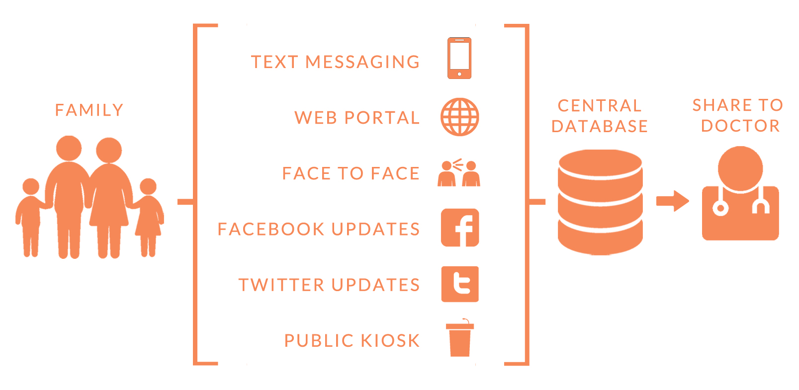

LearnTogether
Learning Platform Design
“Baby Steps” is a NSF-funded design project directed by Professor Julie Kientz at Department of Human-Centered Design and Engineering, University of Washington, and in cooperation with the Washington State Government. This project is focused on designing technology to help detect, record, and track important developmental milestones that occur in children during their first 5 years of life. In this project, we hope to detect developmental delays early and preserve childhood memories.
UX Designer
Prototype Engineer
Flow Diagram, Prototype
March - June 2013
How can technology support tracking developmental milestones for every child in Washington State over a period of five years?
An eco-system of tools to track both developmental and sentimental records in whatever way feel most comfortable.
Based on the month the baby born, parents follow different twitter accounts, and we post milestones automatically to let parents reply it. Once it's in the database, it is shared with the baby's medical provider and relevant services who can help with diagnosis. In this user-centered design process, we hope to make record-keeping more fun and less medical, improve access for all, and fulfill the goal of early detection of developmental disorders. In this project, my responsibilities include designing the information flow and Twitter App prototype by Python and MySQL to collect milestone data.
[ Code is available upon request ]